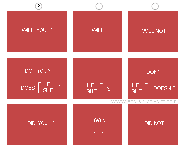

́o ́
Отрицательные предложения
Прошедшее время
Давнопрошедшее время
Будущее время
кликнув по таблице левой кнопкой мыши и, удерживая кнопку нажатой, Вы можете перемещать таблицу в удобное место на экране
X

мелкий меню
{p{font-size:1.5em;}h1,.text div,.ui-mobile label,div.ui-controlgroup-label{font-size: 1em !important;}.ui-btn{font-size:1em!important; font-weight:400!important;}.info{ font-size:1.3em;}#selector .ui-btn{ font-size:1.4em!important;}.ui-selectmenu .ui-header .ui-title {min-height: 1em;} /*.spaceTopPage {margin-top:5.5em;}*//*.text {max-width:45em;} */.ui-listview>li>a.ui-btn,#page h1 {font-size:1em!important;} .buttons, .ui-header-fixed, .ui-footer-fixed, .ui-mobile [data-role=page], .ui-mobile [data-role=dialog], .ui-page {max-width:728px;}#switchers .ui-btn{width:5em;} .ui-btn-icon-notext.ui-btn-left {left: 6.75em;}}
крупный меню
p,h1,.ui-btn,.text div,.ui-mobile label,div.ui-controlgroup-label,.info {font-size: 1.5em !important;} .ui-selectmenu .ui-header .ui-title {min-height: 2.5em;} .text {max-width:45em} .ui-listview>li>a.ui-btn,#page h1 {font-size: 1.7em !important;} .buttons, .ui-header-fixed, .ui-footer-fixed, .ui-mobile [data-role=page], .ui-mobile [data-role=dialog], .ui-page {max-width:728px;} #width1 .ui-navbar { max-width: 728px !important;} #switchers .ui-btn{width:5em;}.ui-btn{font-weight:400!important;}
href="javascript: void(0)" onclick="popup('generator-fraz.html', 743, 617, 'Генератор фраз'); return true;"
/* Globals */
/* Font
-----------------------------------------------------------------------------------------------------------*/
html {
font-size: 100%;
}
body,
input,
select,
textarea,
button,
.ui-btn {
background-color: #1d1d1d;
border-color: #1b1b1b;
color: #fff;
text-shadow: 0 1px 0 #111;
font-size: 1em;
line-height: 1.3;
font-family: sans-serif;
}
legend,
.ui-input-text input,
.ui-input-search input {
color: inherit;
text-shadow: inherit;
}
.ui-mobile label,
div.ui-controlgroup-label {
font-weight: normal;
font-size: 16px;
}
/* Buttons
-----------------------------------------------------------------------------------------------------------*/
.ui-btn,
label.ui-btn {
font-weight: bold;
border-width: 1px;
border-style: solid;
}
.ui-btn {
text-decoration: none !important;
}
.ui-btn-active {
cursor: pointer;
}
/* MINE
-----------------------------------------------------------------------------------------------------------*/
//function refreshPage() {jQuery.mobile.changePage(window.location.href,{allowSamePageTransition:true,transition:'none',reloadPage:true});}
//
//refreshPage();
DNS A-value: 173.236.224.56
длинный дэш(тире): —
http://www.english-polyglot.com/img/avatarka-feedburner.jpg
Mr.Poligloto
English in 16 hours
144
144
Вы окажете неоценимую помощь автору сайта, если найдете время, чтобы разместить на Вашем сайте активную гиперссылку на сайт www.english-polyglot.com.
Просто скопируйте и вставьте на Вашу страницу код:
телеканала Культура
// $("#page1").on( "swiperight", function() {
// if (!text_visibility)
// {
// $("#topPage").toggle(700);
// text_visibility=1;
// $( "#radio4_0" ).prop( "checked", true ).checkboxradio( "refresh" );
// $( "#radio4_1" ).prop( "checked", false ).checkboxradio( "refresh" );
// }
//// if (text_visibility)
//// {
//// $("#topPage").toggle(700);
//// text_visibility=0;
//// $( "#radio4_1" ).prop( "checked", true ).checkboxradio( "refresh" );
//// $( "#radio4_0" ).prop( "checked", false ).checkboxradio( "refresh" );
//// }
//
// if (!text_visibility) {
// document.getElementById("text_monitor").innerHTML = 'Swipe←left to hide text';start_timer("text_monitor");}
// else {document.getElementById("text_monitor").innerHTML = 'Swipe←left to hide text';clearTimeout(id_timer);start_timer("text_monitor")};
// });
За то время пока в эфире телеканала Культура выходило реалити-шоу «Полиглот» публика разделилась на две части. Первая — поддержала идеи Дмитрия Петрова, в особенности люди, чьё желание изучить английский затерялось глубоко в недрах школьной программы. Другая часть — категорически не приняла методику Петрова, считая ее сильно ограниченной.
С одной стороны, критики правы, поскольку суть петровской методики — отсечь лишнее. Минимум грамматики, 300 базовых слов и ... общение на языке. С другой стороны, как еще изучать язык в условиях жизненного цейтнота?
Ажиотаж вокруг программы «Полиглот» показывает, что подача языка по-старинке вызывает у обучаемых отторжение. Такая подача лишена главного стимула обучения — возможности скорейшего применения знаний на практике.
Вдохновленный идеями Дмитрия Петрова, автор сайта попытался разработать интерактивные материалы, которые помогут ускорить освоение языка. Каждый урок это минимально необходимая теоретическая база и практикум —
Видео 3 урок Полиглот обрезанный и
погружение в среду языка при помощи фильмов.
Базовая таблица глаголов Петрова
from flash 1322 frame
//button_1.addEventListener(MouseEvent.CLICK, fl_ClickToGoToWebPage);
//
//function fl_ClickToGoToWebPage(event:MouseEvent):void
//{
// navigateToURL(new URLRequest("http://www.english-polyglot.com/generator-fraz.html"), "_blank");
//}
//
pausing.removeEventListener(MouseEvent.CLICK,changePlayback);
//OK.CONNECT.insertShareWidget("ok_shareWidget",document.URL,"{width:145,height:30,st:'rounded',sz:20,ck:1}");
//odk.onload = odk.onreadystatechange = function () {
// if (!this.readyState || this.readyState == "loaded" || this.readyState == "complete") {
// if (!this.executed) {
// this.executed = true;
// setTimeout(function () {
// OK.CONNECT.insertShareWidget("ok_shareWidget",document.URL,"{width:145,height:30,st:'rounded',sz:20,ck:1}");
// }, 0);
// }
// }};
//// d.documentElement.appendChild(odk);
//x.parentNode.insertBefore(odk, x);
// сто раз удаленное видео - ссылка вверху
// сто раз удаленное видео - само видео внизу
Обрезанный 1 урок Полиглот
Полиглот урок №1 (сокращенный)
//из-под удаленной ссылки шняжная шняжка
Таблица глагола to be (-ing)
//из четвертого урока - до слов - "Исходя из сказанного, писатель, вне зависимости от пола, может сказать о себе"

Упрощенная таблица глаголов Петрова
''+
''+
'
'+
'
'+
'
'+
'
'+textdescription+'
'+pronunciation+'
'+
'

'+
''+
'');
newwin.document.close();
function popup(url, width, height, windowtitle, textdescription, pronunciation)
{
var left = (screen.width - width)/2;
var top = (screen.height - height)/2;
var params = 'width='+width+', height='+height;
params += ', top='+top+', left='+left;
params += ', directories=no';
params += ', location=no';
params += ', menubar=no';
params += ', resizable=yes';
params += ', scrollbar=yes';
params += ', status=no';
params += ', toolbar=no';
if (url=="")
{
var newwin=window.open(url, 'windowwin5', params);
newwin.document.open();
newwin.document.write(''+windowtitle+''+
''+
''+
''+
'
'+
'
'+
'
'+
'
'+textdescription+'
'+pronunciation+'
'+
'
Если продолжить упрощать английскую грамматику до состояния ясного, быстрого и прямого понимания, рано или поздно столкнешься с необходимостью отказаться от громоздкой системы сопоставления языков по видовременной шкале.
Если рассматривать всё языкознание как набор гипотез, объясняющих структуру и работу языка, то гипотеза о том, что каждая фраза имеет в себе ось времени, кажется самой туманной.
Поэтому англичане не имея такой удобной возможности пошли по более громоздкому, но в чем то более системному пути.
Наши фразы отличаются только глаголами (корень у глагола один, отличаются только приставки, окончания и суффиксы).
Все говорят, что в английском языке нет совершенного вида. То есть у английского глагола нет опции, которая может передавать законченность действия. Да это так. Однако то что русские глаголы делают при помощи приставок:
делал - сделал
английские глаголы делают при помощи конструкции из вспомогательного глагола хэв и глагола в третьей форме. Стало быть английский перфект = русскому совер. виду. has done = сделал. Грамматические особенности видов . Глаголы НСВ и СВ различаются составом форм, сочетаемостными свойствами, субституционными возможностями.
Глаголы НСВ имеют три формы времени: настоящее ( читаю, -ешь, -ет, -ем, -ете, -ют ), прошедшее ( читал, -а, -о, -и ), будущее аналитическое ( буду, -ешь, -ет, -ем, -ете, -ут читать ).
Причастия, образованные от них, имеют две формы времени: настоящего и прошедшего; примеры: читающий, читавший; читаемый, читанный.
Глаголы СВ имеют две формы времени: прошедшее и будущее простое ( прочитал, -а, -о, -и; прочитаю, -ешь, -ет, -ем, -ете, -ют ).
Причастия, образованные от них, имеют одну форму времени – прошедшее ( прочитавший, -ая, -ее, -ие ).
Таким образом, СВ и НСВ не совпадают по составу парадигм.
Cовершенный вид
Глагол — одна из частей речи русского языка описывающая действие.
В русском языке глаголы имеют семь грамматических признаков: вид, наклонение, время, лицо (кроме прошедшего времени), число, род (кроме настоящего и будущего времени) и залог. Отдельным признаком еще иногда рассматривают спряжение.
Это список опций, которые видоизменяют глагол. Обратите внимание, первым в этом списке стоит - вид. Он бывает совершённым и несовершённым.
Отсюда и начинаются сложности.
Сравните две фразы:
И т.д. Здесь главная сложность - найти для глагола правильную видовую пару: совершенного и несовершенного вида (перфектную и имперфектную).
Первая - несовершенного вида. Вторая - совершенного. В чем же разница? Обе фразы говорят о законченном действии. Человек шел-шел и дошел. В первом случае когда-то, во втором - сейчас. Почему же одна из них считается совершённой, а другая несовершённой? По логике - он идет - вот несовершённое действие. В итоге, из-за неудачно подобранного названия возникла путаница.
Определение, которое стоит в википедии, затуманивает мысли окончательно:
Несовершенный вид обозначает действие в его течении, без указания на границу действия (отвечает на вопрос что делать?) (рисовать, петь).
Совершенный вид обозначает действие, ограниченное пределом (отвечает на вопрос что сделать?) (нарисовать, спеть).
Спасают только вопросы в скобочках.
Более уместным было бы назвать первую фразу истекшей, а вторую неистекшей. По аналогии со сроком годности.
Это первая западня - логическая. Того, кто из неё выбрался ожидает другая - вспомнить пару.
Двувидовость. Каждый глагол легким изменением приставки или окончания превращается из глагола совершенного вида в несовершенный и наоборот. Именно эта легкость и ставит в тупик и тех кто хочет перводить с русского на английский и тех кто хочет выучить русский. Никаких явных указаний на принадлежность к виду. Она у русскоговорящих в крови. В результате этого русскоговорящий человек теряет возможность беглого распознавания глаголов совершенного от несовершенного. Иногда мы простов в тупике. Нам кажется что это и совершенный и несовершенный вид. А некоторые глаголы так те и сами по себе двувидовые. Не то наши предки придумать пару не смогли, не то не нужна была из-за редкого использования. В английском же языке вида нет. Говорят грамматисты. Зато есть перфект. У нас кстати тоже был перфект. В старославянском. Да вывели. Из-за простоты использования приставок с окончаниями. Вот и получается что англичане говорят более официальным языком. Более шаблонно. Узко. Хочешь сказать о чем-то свершенном используй перфект. Ага: have loved - полюбил. Хочешь сказать просто: loved - любил. А у нас ведь еще и влюбил и улюбил и олюбил и возлюби и перелюби и налюби и надлюби и слюби и залюби и подлюби. Бескрайняя широта! Хотя все приставки известны и смысл каждой понятен. Потому и называется двувидовость славянских языков аномалией, потому что нет аналогии в этих, как их в германских языках. Хотя и там идет эволюция в сторону ослабления перфекта. Утраты результативности. Английский хорош для программистов его лече описать. Русский более гибок. Описать сложнее. И поэтому нам надо
Критерий Маслова
Англичане выходят из положения, используя вспомогательный глагол
have и третью форму глагола:
В данном случае
come - третья форма глагола.
То есть, в русском языке о совершённости(законченнности) или несовершённости(незаконченности) действия говорят при помощи приставок и окончаний: шел-пришел-приходил. А в английском при помощи вспомогательного глагола have и паст партисипал
То есть, в английском языке для этого имеется целая группа времен
perfect tense -
совершённое время.
Надо сказать что наши предки тоже использовали перфект.
инфа из головы
я летел - flew
я полетел месяц назад в австралию - i have flown
ну, я полетел - ну, я пошел
В английском языке глаголы не имеют морфологического признака вида. Для выражения оттенков протяженности действия во времени или его завершенности используются аналитические конструкции со вспомогательными глаголами.
Если представить богатство смыслов, которые передаются в русском языке при помо
Кстати говоря, частое употребление послелогов (см. урок 8), которые вместе с глаголами образуют фразовые глаголы ни что иное, как попытка носителей аналитического языка (английского в данном случае) найти замену флексиям в синтетических языках.
Любопытно взглянуть на русские глаголы, если бы мы лишили их флексий:
- Петр имеет чиненный унитаз — Петр починил унитаз
- Петр чинил унитаз — Петр починял унитаз
- Петр был чинивший унитаз — Петр чинил унитаз
- Петр есть чинивший унитаз — Петр чинит унитаз
- Петр будет иметь чиненный унитаз — Петр починит унитаз
- Петр будет чинить унитаз — Петр будет чинить унитаз
И чтобы упростить и облегчить понимание, перфект на английском для русскоговорящего человека не нужно рассматривать как отдельную видовременную группу (хотя и так тоже можно, кому как нравится), а рассматривать его как вспомогательный подвид. И его легко можно соорудить при помощи базовой таблицы глаголов и русской видовой пары.
чинит ли Петр, чинил ли Петр унитаз, починит ли Петр унитаз,
Несколько поравок в грамматику английского языка
Отсюда и путаница в головах. Никакого «презент перфект» не существует. Это иллюзия. Это название - нелепая ошибка, нарушающая все законы логики. Просто перфект. Иногда мне кажется, что Мол, дело-то вот-вот закончилось, или дело-то еще актуально!
И последний ньюанс - это то, что этот результат мог быть и в прошедшем времени. То есть это означает, что Вчера Володя мне рассказал, что он посмотрел этот фильм. Yesterday he told me that he had seen this film - это значит если я вам говорю I have seen this film - я его посмотрел вот к этому моменту. Я имею опыт. А он мне рассказал, что он вчера уже имел этот опыт.
Любое действие приводит к результату. Но мы не всегда хотим говорить об этом результате. Чаще всего мы говорим о факте. Чаще всего мы перечисляем события. Пошел туда. Увидел того. Поговорил о том. неважно. А если я хочу подчеркнуть - Я встречался с этим человеком, поэтому я знаю его. Я прочитал эту книгу, поэтому я знаю о чем она. Если мы хотим это подчеркнуть.
Had это произошло к тому моменту, когда он мне сказал. Нас интересует только тот факт, что он мне сказал. Я не знаю, может он и не видел фильм, но он мне сказал. И вот к тому моменту, когда он сказал, я уже посмотрел этот фильм. То есть главное событие - He told me - Он сказал мне.
Здесь нам важен результат. То что нечто "сделано". I have. Носитель языка - не обязательно это грамотный человек. Но он знает что have это значит - иметь. Поэтому "иметь" означает - иметь результат какого-то действия. Например, I have loved - Я любил (Я знаю что это такое).
Что это означает: I have seen - я имею что-то увиденное. I have seen this film, so I know about it. - Я видел этот фильм, поэтому я знаю о чем он. I khow who plays a main role - Я знаю кто играет главную роль. То есть если меня интересует просто сам факт - Я смотрел фильм - I saw this film. А если: Ты знаешь я вчера смотрела фильм и он жутко мне не понравился, я тебе его сейчас расскажу. Здесь можно ответить - I have seen this film. Не надо мне про него рассказывать - я всё знаю.
Английский язык не имеет такой грамматической категории как совершенный/несовершенный вид. Поэтому, при переводе пары однокоренных русских глаголов совершенного и несовершенного видов используются разнокоренные английские глаголы. Например:
В русском языке есть особенность — подавляющее большинство глаголов имеют две грамматические формы несовершенного и совершенного вида:
Такого различия в английском языке нет и форма глагола не выражает законченность действия.
Тем не менее, законченность действия в английском можно передать при помощи других грамматических средств.
В частности, связка вспомогательного глагола
have и третьей формы глагола дает конструкцию эквивалентную совершенному виду в русском:
Подробнее о перфектах в 11 уроке.
Сейчас же важно понять, что наша таблица выдает результаты только для глаголов несовершенного вида:
Однако, всему свое время, и пока на этой теме сосредотачиваться не стоит.
Русские глаголы приводятся в таблице в своей основной форме без приставок. С присоединением приставок глаголы продолжают образовывать пары совершенного/несовершенного вида. Например:
- при- + ходить = приходить (несовер.)
- при- + идти = прийти (соверш.)
Пример с глагольной парой: навестить-навещать
Вспомогательный глагол может видоизменяться в соответствии со временем и наклонением, и может также появляться в нефинитных формах (инфинитив, причастие или герундий), таким образом, порождая ряд конструкций, которые сочетают Perfect аспект с другими глагольными опциями:
(Также, обратите внимание на будущее время. Оба глагола несовершенного вида образованы при помощи одной из форм вспомогательного глагола «быть» – «буду». А совершенный – при помощи словоизменения (с помощью приставок, суффиксов, окончаний). Именно это различие часто помогает определить принадлежность глагола к виду. Если в будущем времени глагол употребляется с «быть» – глагол несовершенного вида, если употребляется без «быть» – совершенного. Напр.:
определи́ть – определя́ть
Первый с «быть» не употребляется (*буду определи́ть), он, стало быть, совершенного вида. Второй – употребляется, значит он несовершенного вида.)
Схема зеленого цвета в верхней части страницы — это и есть собранные воедино формы глагола to be.
//В дело верное.
Рубль кровный свой.
Не бойся класть.
Мысли скверные
Из головы долой!
Здесь некому красть!